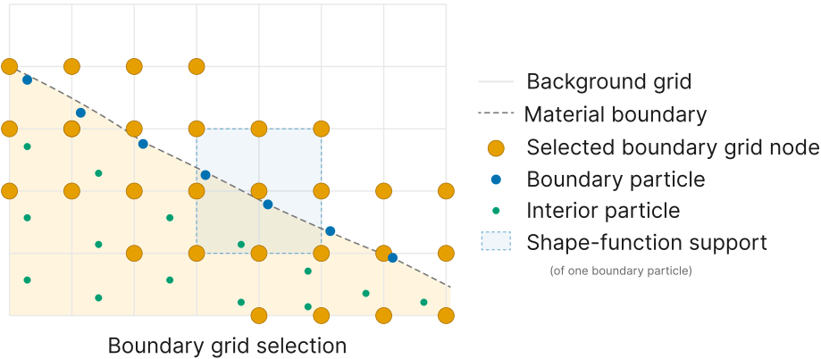

Coupling nodes
Boundary nodes come from the particles
Each domain marks a layer of boundary particles once, before the run. At every frame their particle-to-grid footprint selects the grid nodes that receive Schwarz boundary data, so no interface geometry has to be tracked. Where both grids claim the same location, the side with the larger grid mass density donates and the other receives.

Fig. 2a of the paper.